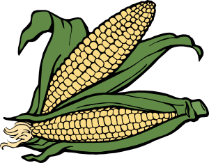

Welcome to Fresh Foods!
We sell crops directly from local farms. This ensures your food goes through minimal hassle betwen coming from the Earth, to your dinner plate. We only sell the freshest produce. Fresh Foods sells potatoes, corn, raspberries, apples, milk, and eggs. These produce come from the Hitchcook, Toyama, and Harrison farms.
